1. TỔNG QUAN VỀ THIẾT KẾ CSDL
1.1. Tại sao phải thiết kế CSDL?
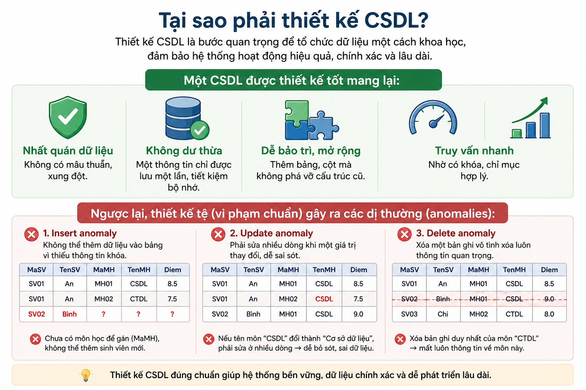
1.2. Vòng đời thiết kế CSDL
Theo phương pháp luận cổ điển:

Trong giáo trình này, chúng ta tập trung vào bước 2, 3, 4.
1.2. Vòng đời thiết kế CSDL
Trong giáo trình này, chúng ta tập trung vào bước 2, 3, 4.
1.3. Các khái niệm nền tảng trước khi bắt đầu
- Khóa chính (Primary Key): Một hoặc nhiều thuộc tính xác định duy nhất mỗi dòng trong bảng.
- Khóa ngoại (Foreign Key): Một thuộc tính (hoặc tập thuộc tính) tham chiếu khóa chính của bảng khác, tạo liên kết.
- Phụ thuộc hàm (Functional Dependency): X → Y nghĩa là nếu hai dòng có cùng giá trị ở tập thuộc tính X thì chúng cũng có cùng giá trị ở tập Y.
Ví dụ: Mã sinh viên → Họ tên, Ngày sinh (một mã sinh viên xác định duy nhất họ tên và ngày sinh).
Ghi nhớ: Thiết kế CSDL giống như xây ngôi nhà – cần bản vẽ chi tiết trước khi đổ bê tông.
2. MÔ HÌNH THỰC THỂ - LIÊN KẾT (ER)
Khái niệm cơ bản
Mô hình ER dùng để:
- Xác định đối tượng (thực thể) trong hệ thống
- Xác định thuộc tính của chúng
- Xác định mối liên kết giữa các thực thể
2.1. Thành phần cơ bản của ERD
a) Thực thể (Entity)
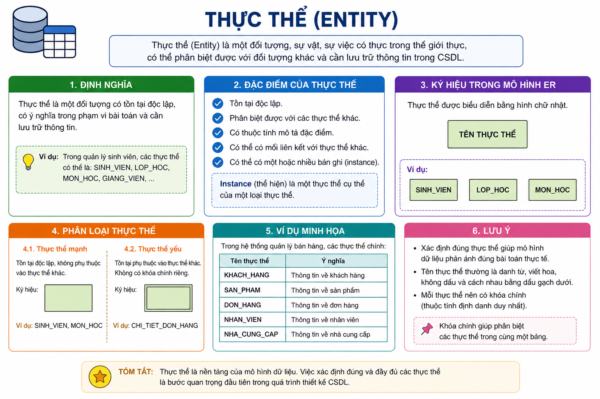
b) Thuộc tính (Attribute)
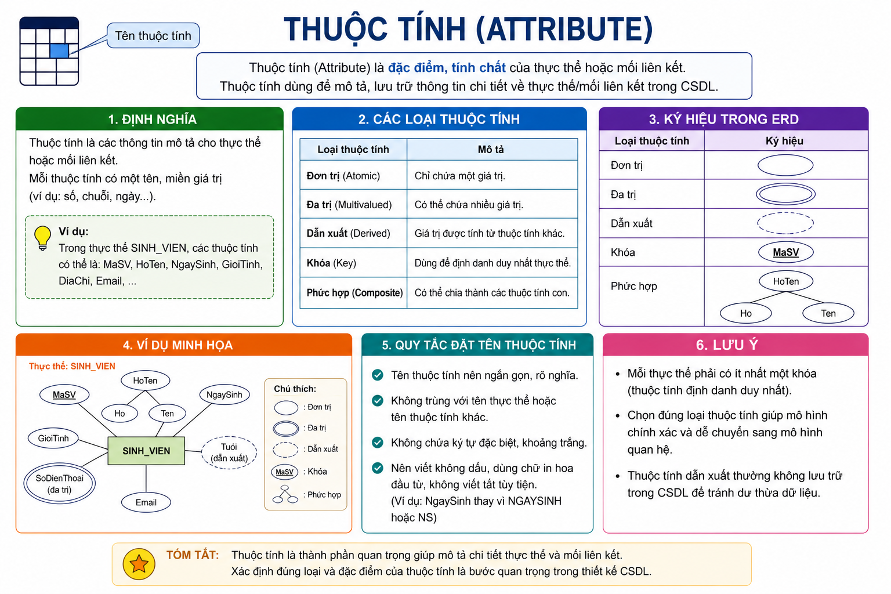
c) Liên kết (Relationship)
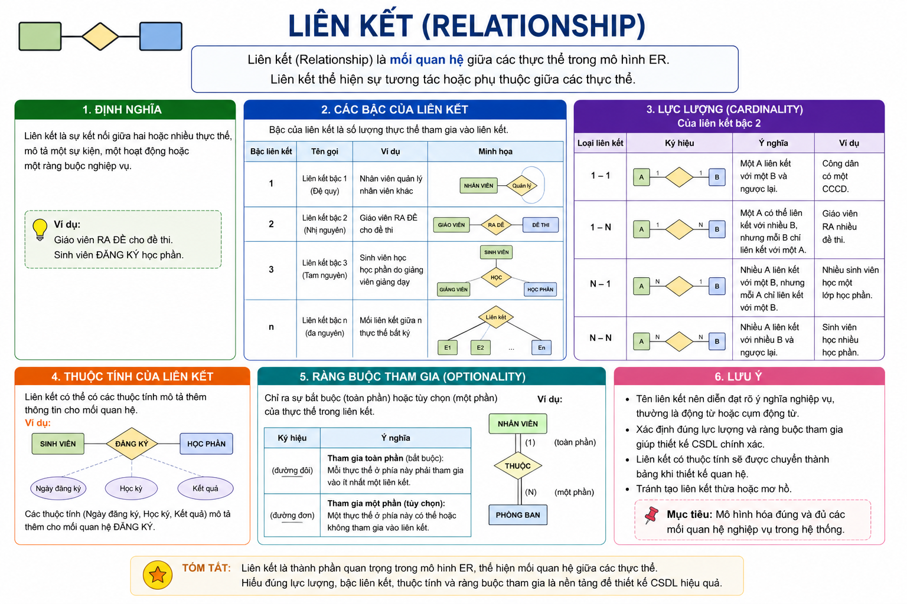
d) Bản số (Cardinality)
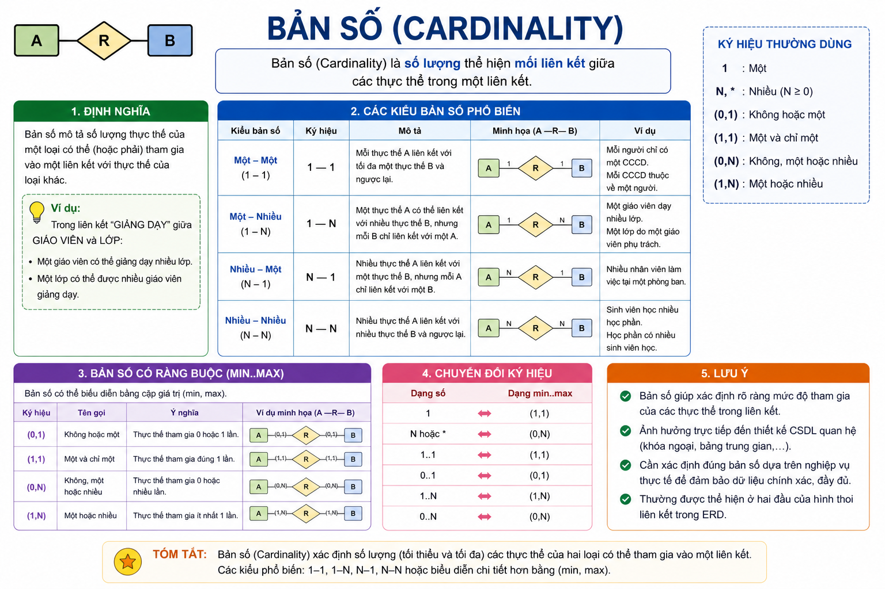
2.2. Ví dụ minh họa xây dựng ERD
Yêu cầu nghiệp vụ:
Hệ thống quản lý đề thi cho một trung tâm ngoại ngữ.
- Mỗi giáo viên có mã giáo viên, họ tên, chuyên môn, số điện thoại (có thể nhiều số).
- Mỗi đề thi có mã đề, tên đề, cấp độ (A1, A2, B1...).
- Một giáo viên có thể ra nhiều đề thi. Một đề thi chỉ do một giáo viên ra (vì lý do bản quyền).
- Cần lưu thêm ngày ra đề cho mỗi lần ra đề (thuộc tính của liên kết).
Bước 1: Xác định thực thể → GIAO_VIEN, DE_THI.
Bước 2: Xác định thuộc tính
| Thực thể | Thuộc tính (gạch chân cho khóa) |
|---|---|
| GIAO_VIEN | MaGV, HoTen, ChuyenMon, SoDienThoai (đa trị) |
| DE_THI | MaDe, TenDe, CapDo |
Bước 3: Xác định liên kết - Giữa GIAO_VIEN và DE_THI có liên kết RA_DE.
- Bản số: Một giáo viên ra nhiều đề (một GV có thể ra nhiều đề).
- Một đề chỉ do một GV ra (theo yêu cầu). → Đây là liên kết 1-n từ GIAO_VIEN (1) đến DE_THI (n).
- Thuộc tính của liên kết: NgayRaDe (ngày tháng năm ra đề).
Bước 4: Vẽ ERD
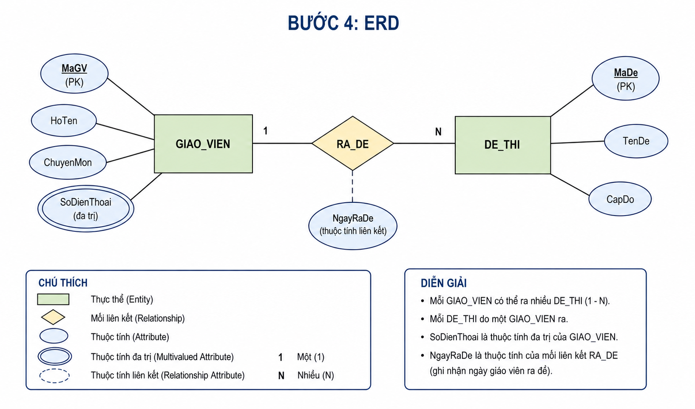
2.3. Quy tắc xác định bản số chính xác
Có 3 dạng chính:
- 1-1: Ví dụ: Một người có một căn cước. Cài đặt: đặt khóa ngoại ở một bảng.
- 1-n: Phổ biến nhất. Ví dụ: Một phòng ban có nhiều nhân viên; một nhân viên thuộc một phòng ban. Cài đặt: khóa ngoại từ bảng "n" trỏ về bảng "1".
- n-n: Ví dụ: Học sinh – môn học. Cài đặt: tạo bảng trung gian.
Lưu ý: Không được vẽ liên kết trực tiếp n-n trong lược đồ quan hệ được; bắt buộc phải tách bảng trung gian.
2.4. Bài tập thực hành ERD
Bài tập 1: Quản lý khách sạn
Khách (mã khách, tên, CMND). Phòng (số phòng, loại phòng, giá). Mỗi khách có thể thuê nhiều phòng (khác ngày). Mỗi phòng có thể được thuê bởi nhiều khách qua các thời điểm khác nhau. Một hợp đồng thuê ghi nhận một khách thuê một phòng từ ngày đến ngày. Hãy xác định thực thể, liên kết, bản số.
Bài tập 2: Quản lý nhân sự - dự án
Nhân viên (mã NV, tên, lương). Dự án (mã DA, tên DA, kinh phí). Một nhân viên có thể tham gia nhiều dự án, một dự án có nhiều nhân viên. Khi tham gia, cần lưu vai trò (trưởng nhóm, thành viên) và số giờ làm. Hãy vẽ ERD (chú ý bảng trung gian).
3. CHUYỂN ĐỔI ERD THÀNH LƯỢC ĐỒ QUAN HỆ
3.1. Các quy tắc chuyển đổi (mapping rules)

3.2. Áp dụng cho ví dụ RA_DE
- Thực thể mạnh: GIAO_VIEN → bảng GiaoVien (MaGV, HoTen, ChuyenMon)
- Thuộc tính đa trị SoDienThoai → bảng SoDienThoai_GV (MaGV, SoDienThoai) – PK: (MaGV, SoDienThoai)
- Thực thể mạnh: DE_THI → bảng DeThi (MaDe, TenDe, CapDo)
- Liên kết 1-n (GV ra nhiều đề): thêm khóa ngoại MaGV vào bảng DeThi. Thêm cả thuộc tính liên kết NgayRaDe vào bảng DeThi.
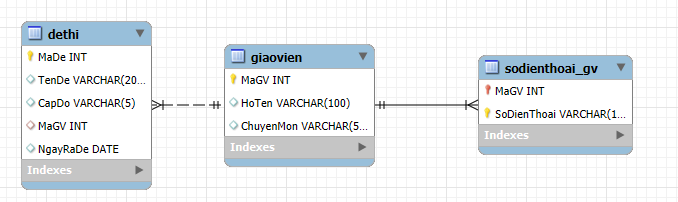
MaGV INT PRIMARY KEY,
HoTen VARCHAR(100),
ChuyenMon VARCHAR(50)
);
CREATE TABLE SoDienThoai_GV (
MaGV INT,
SoDienThoai VARCHAR(15),
PRIMARY KEY (MaGV, SoDienThoai),
FOREIGN KEY (MaGV) REFERENCES GiaoVien(MaGV)
);
CREATE TABLE DeThi (
MaDe INT PRIMARY KEY,
TenDe VARCHAR(200),
CapDo VARCHAR(5),
MaGV INT,
NgayRaDe DATE,
FOREIGN KEY (MaGV) REFERENCES GiaoVien(MaGV)
);
3.3. Ví dụ liên kết n-n (sinh viên - môn học)
ERD: SinhVien (MaSV, HoTen) - n-n - MonHoc (MaMH, TenMH)
Thuộc tính liên kết: DiemThi.
Chuyển đổi:
- Bảng SinhVien (MaSV, HoTen)
- Bảng MonHoc (MaMH, TenMH)
- Bảng trung gian DangKy (MaSV, MaMH, DiemThi) – PK: (MaSV, MaMH), FK: MaSV→SinhVien, MaMH→MonHoc.
Không được bỏ bảng trung gian.
3.4. Lưu ý về đặt tên khóa ngoại
Nên đặt cùng tên với khóa chính của bảng tham chiếu để dễ nhận biết.
Ví dụ: MaGV trong bảng DeThi là khóa ngoại, nên giữ tên MaGV.
4. CHUẨN HÓA CƠ SỞ DỮ LIỆU
4.1. Dạng chuẩn 1 (1NF)
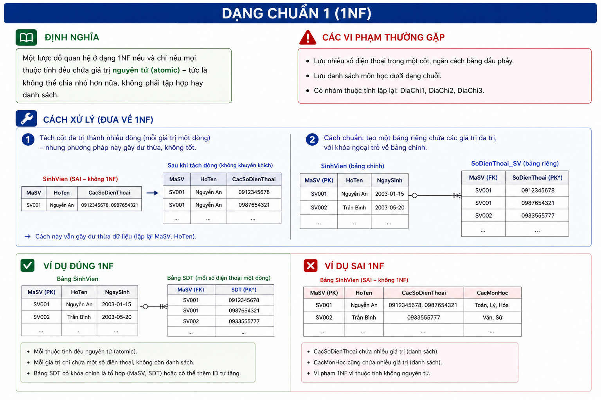
4.2. Dạng chuẩn 2 (2NF)
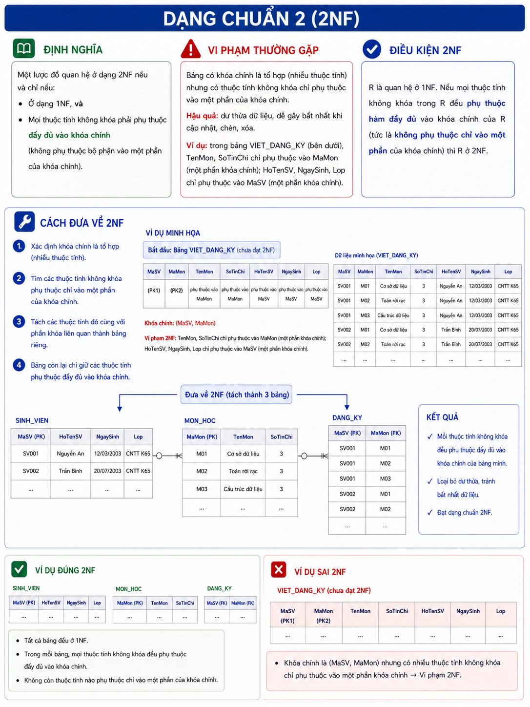
4.3. Dạng chuẩn 3 (3NF)
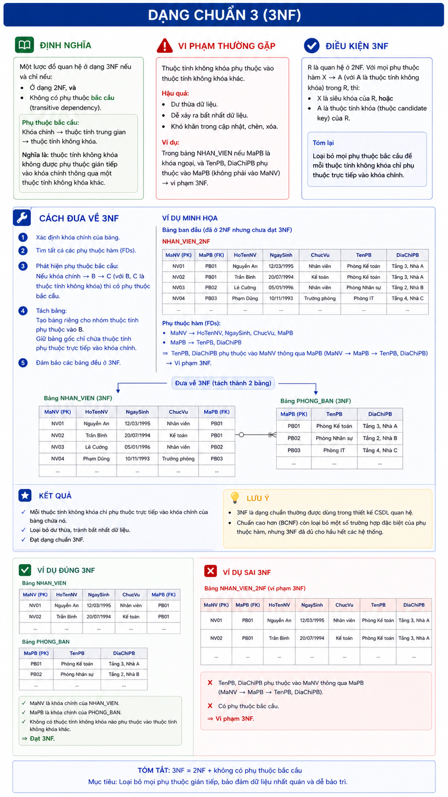
4.4. Quy trình chuẩn hóa một bảng (tóm tắt)
- Kiểm tra 1NF: Nếu có cột đa trị → tách bảng riêng.
- Xác định khóa chính (có thể ghép) và các phụ thuộc hàm.
- Kiểm tra 2NF: Nếu khóa ghép và có thuộc tính phụ thuộc một phần → tách bảng.
- Kiểm tra 3NF: Nếu có phụ thuộc bắc cầu → tách bảng.
4.5. Bài tập chuẩn hóa (có lời giải chi tiết ở phần 5)
Đề bài: Cho bảng DIEMTHI (MaSV, HoTen, MaMH, TenMH, SoLanThi, Diem, NgayThi).
Biết:
- Mỗi sinh viên có một họ tên.
- Mỗi môn học có một tên môn.
- Một sinh viên thi một môn có thể thi nhiều lần (SoLanThi đánh dấu lần thứ mấy) và mỗi lần có một điểm và ngày thi.
Khóa chính: (MaSV, MaMH, SoLanThi). Hãy chuẩn hóa về 3NF.
Bài 1: Xây dựng ERD và chuyển đổi cho hệ thống đặt vé máy bay
Yêu cầu:
- Hành khách (mã HK, họ tên, số CMND, số điện thoại – có thể nhiều số).
- Chuyến bay (mã chuyến, điểm đi, điểm đến, giờ khởi hành, giờ đến).
- Một hành khách có thể đặt nhiều vé (nhiều chuyến bay khác nhau). Mỗi vé thuộc về một hành khách và một chuyến bay.
- Vé có mã vé, ngày đặt, hạng vé (phổ thông, thương gia), giá vé.
Giải:
Bước 1 – Xác định thực thể: HANHKHACH, CHUYENBAY, VE (vé có mã vé riêng, là thực thể độc lập).
Bước 2 – Thuộc tính:
| Thực thể | Thuộc tính |
|---|---|
| HANHKHACH | MaHK (PK), HoTen, CMND, SoDienThoai (đa trị) |
| CHUYENBAY | MaCB (PK), DiemDi, DiemDen, GioKhoiHanh, GioDen |
| VE | MaVe (PK), NgayDat, HangVe, GiaVe |
- HANHKHACH – VE: 1-n (một khách nhiều vé);
- CHUYENBAY – VE: 1-n (một chuyến bay có nhiều vé được đặt);
- VE là thực thể con, liên kết với cả hai.
- Không có liên kết trực tiếp giữa HANHKHACH và CHUYENBAY.
Bước 4 – Sơ đồ ER
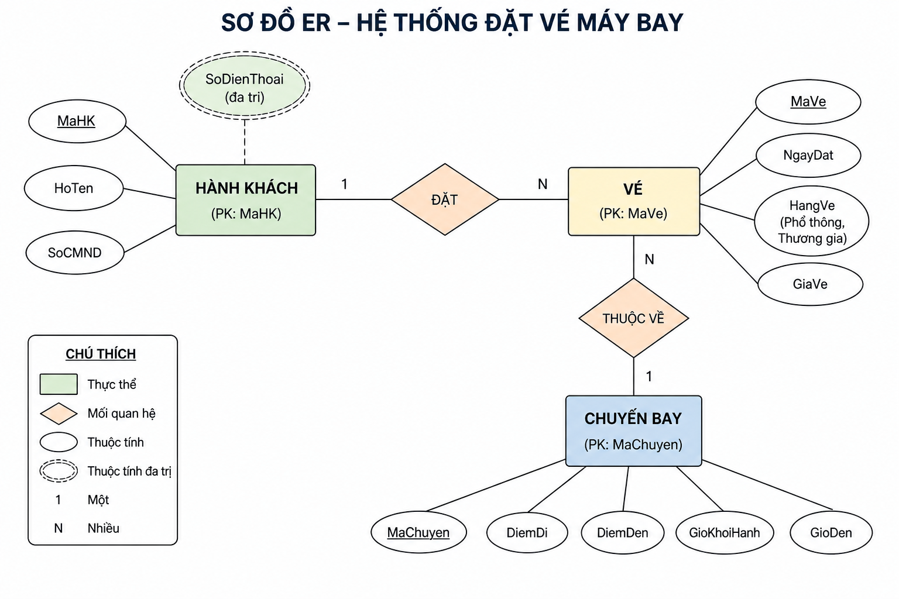
Bước 5 – Lược đồ quan hệ:
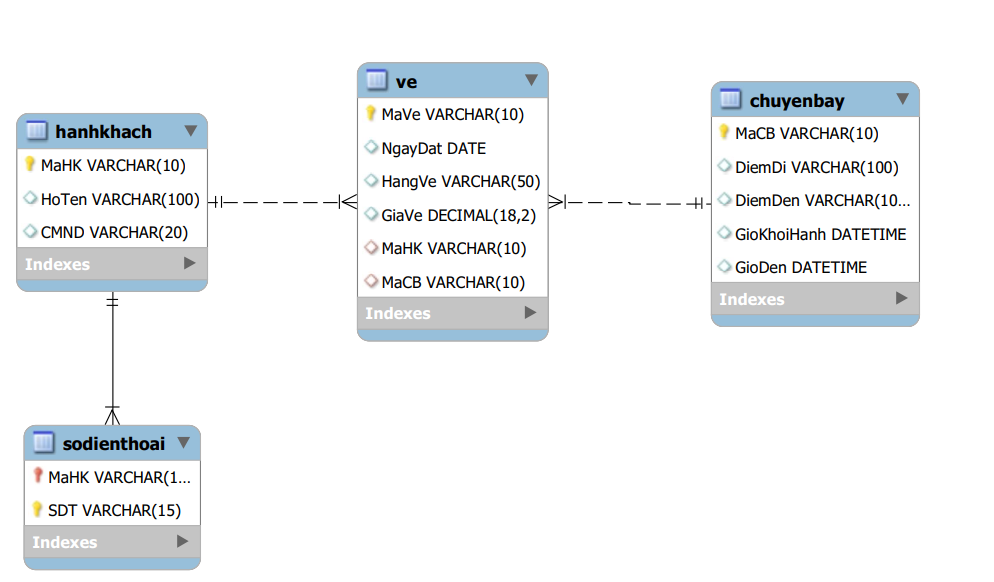
Bước 6 – Chuyển sang bảng:
-- Tạo CSDL
CREATE DATABASE QuanLyVeMayBay;
USE QuanLyVeMayBay;
-- Bảng Hành Khách
CREATE TABLE HanhKhach (
MaHK VARCHAR(10) PRIMARY KEY,
HoTen NVARCHAR(100),
CMND VARCHAR(20)
);
-- Bảng Số Điện Thoại
CREATE TABLE SoDienThoai (
MaHK VARCHAR(10),
SDT VARCHAR(15),
PRIMARY KEY (MaHK, SDT),
FOREIGN KEY (MaHK) REFERENCES HanhKhach(MaHK)
);
-- Bảng Chuyến Bay
CREATE TABLE ChuyenBay (
MaCB VARCHAR(10) PRIMARY KEY,
DiemDi NVARCHAR(100),
DiemDen NVARCHAR(100),
GioKhoiHanh DATETIME,
GioDen DATETIME
);
-- Bảng Vé
CREATE TABLE Ve (
MaVe VARCHAR(10) PRIMARY KEY,
NgayDat DATE,
HangVe NVARCHAR(50),
GiaVe DECIMAL(18,2),
MaHK VARCHAR(10),
MaCB VARCHAR(10),
FOREIGN KEY (MaHK) REFERENCES HanhKhach(MaHK),
FOREIGN KEY (MaCB) REFERENCES ChuyenBay(MaCB)
);
Bài 2: Chuẩn hóa bảng (giải chi tiết)
Đề bài: Bảng NHANVIEN_DUAN (MaNV, TenNV, MaDA, TenDA, NgayBD, NgayKT, SoGio).
Quy tắc:
- Một nhân viên có một tên (MaNV→TenNV).
- Một dự án có một tên (MaDA→TenDA).
- Mỗi nhân viên tham gia một dự án trong một khoảng thời gian (NgayBD, NgayKT) và có số giờ làm.
- Một nhân viên có thể tham gia nhiều dự án. Một dự án có nhiều nhân viên.
Khóa chính: (MaNV, MaDA).
Phân tích: Phụ thuộc hàm: MaNV → TenNV, MaDA → TenDA, (MaNV, MaDA) → NgayBD, NgayKT, SoGio.
Vi phạm 2NF vì TenNV phụ thuộc một phần vào MaNV, TenDA phụ thuộc một phần vào MaDA. Không có phụ thuộc bắc cầu.
Chuẩn hóa về 3NF: Tách thành 3 bảng:
DuAn (MaDA, TenDA) – PK: MaDA
PhanCong (MaNV, MaDA, NgayBD, NgayKT, SoGio) – PK: (MaNV, MaDA), FK: MaNV→NhanVien, MaDA→DuAn
6. ĐỀ ÁN TỔNG HỢP – QUẢN LÝ TUYỂN SINH
6.1. Mô tả bài toán
Một trường đại học tổ chức tuyển sinh theo phương thức xét tuyển dựa trên điểm thi THPT. Hệ thống cần quản lý:
- Thí sinh: Mỗi thí sinh có Số báo danh (SBD, duy nhất), họ tên, ngày sinh, giới tính, quê quán, số điện thoại (có thể nhiều số).
- Trường ĐH: Mã trường, tên trường, địa chỉ.
- Ngành học: Mã ngành, tên ngành, điểm chuẩn, chỉ tiêu, thuộc về một trường.
- Đăng ký nguyện vọng: Mỗi thí sinh đăng ký một danh sách các nguyện vọng (có thứ tự ưu tiên 1,2,3,...). Mỗi nguyện vọng gắn với một ngành.
- Kết quả thi: Thí sinh có tổng điểm thi (điểm 3 môn). Điểm chuẩn của ngành được xác định bởi trường.
- Kết quả trúng tuyển: Dựa trên điểm thi, so với điểm chuẩn và thứ tự nguyện vọng. Cần lưu trạng thái trúng tuyển (đậu/trượt) cho từng nguyện vọng.
6.2. Yêu cầu thiết kế
- Vẽ ERD chi tiết (chỉ rõ bản số, thuộc tính khóa, thuộc tính đa trị).
- Chuyển thành lược đồ quan hệ (các bảng, khóa chính, khóa ngoại).
- Chuẩn hóa về 3NF.
6.3. Gợi ý ERD và bảng
Các thực thể chính: THI_SINH, TRUONG, NGANH, NGUYEN_VONG (bảng trung gian giữa TS và NGANH, có thuộc tính ThuTu, TrangThaiTrungTuyen).
(Có thể bỏ qua bảng KET_QUA_THI vì điểm được lưu trực tiếp trong THI_SINH).
Thuộc tính đa trị: SoDienThoai của THI_SINH → tách bảng SDT (SBD, SDT).
Bản số:
- TRUONG – NGANH: 1-n (một trường có nhiều ngành).
- THI_SINH – NGUYEN_VONG: 1-n (một TS có nhiều NV).
- NGANH – NGUYEN_VONG: 1-n (một ngành có nhiều NV đăng ký).
(Lưu ý: NGUYEN_VONG là bảng trung gian hóa giải liên kết n-n giữa THI_SINH và NGANH).
Lược đồ 3NF:
CREATE TABLE ThiSinh (
SBD VARCHAR(10) PRIMARY KEY,
HoTen VARCHAR(100),
NgaySinh DATE,
GioiTinh VARCHAR(3),
QueQuan VARCHAR(200),
DiemThi DECIMAL(5,2)
);
-- 2. Số điện thoại thí sinh (thuộc tính đa trị)
CREATE TABLE SDT_ThiSinh (
SBD VARCHAR(10),
SoDienThoai VARCHAR(15),
PRIMARY KEY (SBD, SoDienThoai),
FOREIGN KEY (SBD) REFERENCES ThiSinh(SBD)
);
-- 3. Trường ĐH
CREATE TABLE Truong (
MaTruong VARCHAR(10) PRIMARY KEY,
TenTruong VARCHAR(200),
DiaChi VARCHAR(300)
);
-- 4. Ngành học
CREATE TABLE Nganh (
MaNganh VARCHAR(10) PRIMARY KEY,
TenNganh VARCHAR(200),
DiemChuan DECIMAL(5,2),
ChiTieu INT,
MaTruong VARCHAR(10),
FOREIGN KEY (MaTruong) REFERENCES Truong(MaTruong)
);
-- 5. Nguyện vọng (bảng trung gian)
CREATE TABLE NguyenVong (
SBD VARCHAR(10),
MaNganh VARCHAR(10),
ThuTu INT, -- 1,2,3,...
TrangThai VARCHAR(20) CHECK (TrangThai IN ('Đậu', 'Trượt', 'Chưa xét')),
PRIMARY KEY (SBD, MaNganh),
FOREIGN KEY (SBD) REFERENCES ThiSinh(SBD),
FOREIGN KEY (MaNganh) REFERENCES Nganh(MaNganh)
);
Chuẩn hóa: Lược đồ trên đã đạt 3NF vì:
- Không có thuộc tính đa trị (đã tách bảng SDT).
- Các bảng đều có khóa chính đơn hoặc ghép, không có phụ thuộc một phần (do không có thuộc tính không khóa phụ thuộc vào một phần khóa ghép – kiểm tra từng bảng).
- Không có phụ thuộc bắc cầu (ví dụ: điểm chuẩn phụ thuộc vào MaNganh, MaNganh được gắn trực tiếp với Nguyện vọng, không có trung gian).
6.4. Câu hỏi mở rộng
Làm thế nào để đảm bảo một thí sinh chỉ đăng ký tối đa 3 nguyện vọng? (Dùng trigger hoặc check ràng buộc ở tầng ứng dụng)
Nếu cần lưu lịch sử thay đổi điểm chuẩn theo năm, bạn sẽ sửa thiết kế thế nào? (Thêm bảng DotTuyenSinh và liên kết)